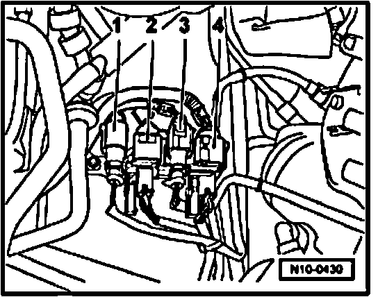

Connector Locations
Fig. 1 Component location of oxygen sensors, harness connectors
- Heated Oxygen Sensor (HO2S) -G39-, bank 1, 6-pin harness connector -1-,
- Oxygen Sensor (O2S) Behind Three Way Catalytic Converter (TWC) -G130-, bank 1, 4-pin harness connector -2-,
- Oxygen Sensor (O2S) Behind Three Way Catalytic Converter (TWC) -G131-, bank 2, 4-pin harness connector -3-,
- Heated Oxygen Sensor (HO2S) 2 -G108-, bank 2, 6-pin harness connector -4-.